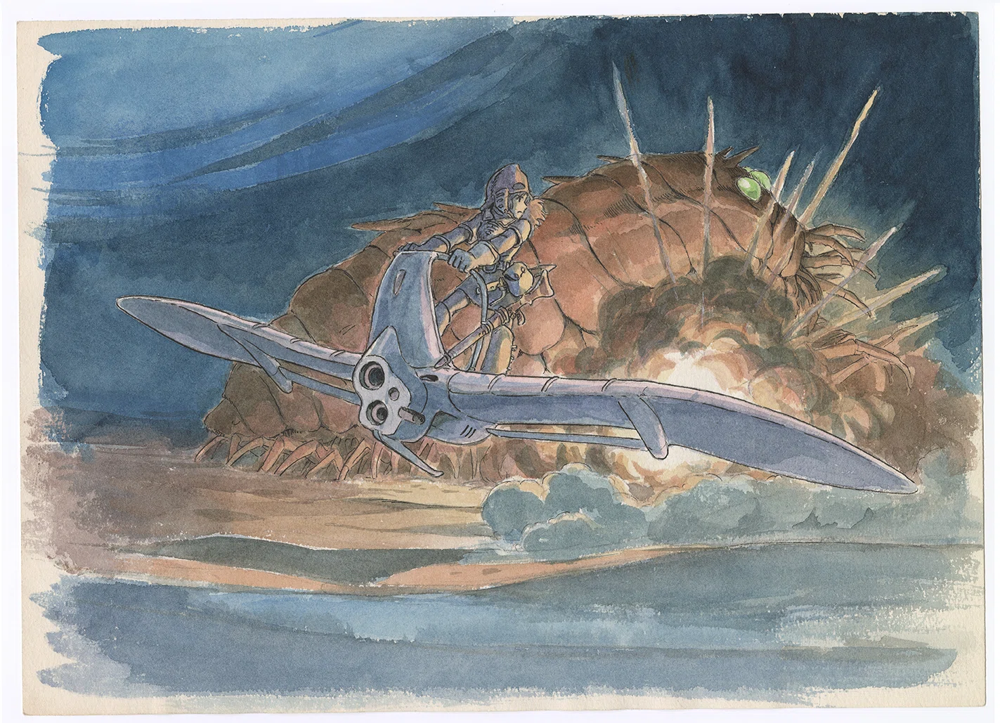
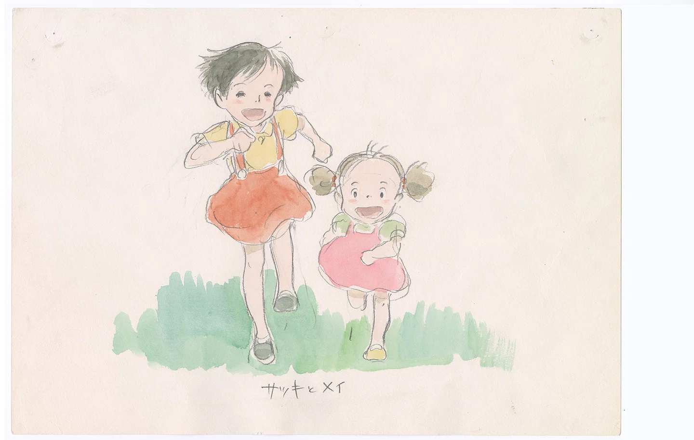

While each is unique, Miyazaki’s films are united by a singular vision which has seen him raise the bar for animated film countless times over. The list of attributes that sets his films apart is infinite. But to name a few, it’s the character design – seen through the rotund comfort of Totoro, Yubaba’s piercing glare or the furrowed brow of the wolf San. It’s the dramatic scores that suffuse millions of hand-rendered frames with emblematic sound. The renowned composer Joe Hisaishi is behind the majority of Miyazaki’s most notable works. My personal favourite of his arrangements is The Legend of Ashitaka; a velvety ode equal to the magisterial forests depicted at the heart of Princess Mononoke. A melody encapsulating the subtle power of Miyazaki’s universe through strings, which crash through the screen in a synaesthesic crescendo of tear-jerking magnificence.
Let us not forget Miyazaki’s masterful architectures, from Kamajī’s boiler room to the winding turrets of Nausicaä. The level of cinematic detail enhances each viewer’s experience. Zoom in on any mechanism and you’ll see immaculate intricacy right down to the gently rusting brass screw heads. Throw in storyline, character development and of course the visual richness of any given frame, and Miyazaki’s extraordinary ability to world-build reveals its power. If you didn’t know by now, yes, I am a fan. I’ve been a fan since I first followed Chihiro into the spirit world where she met a radish spirit and her parents were transformed into pigs. I was nine when the film was released in 2003. A film none of my friends were keen to watch, despite my enthusiasm, unperturbed with its Asianness and “other” culture.
Porco Rosso (1992), Hayao Miyazaki (Copyright © 1992 Studio Ghibli)
 Princess Mononoke (1997), Hayao Miyazaki (Copyright © 1997 Studio Ghibli)
Nearly two decades later, and Ghibli has deservedly established itself at the heart of animated cinema. You could call it mainstream now. The show at the Academy Museum has been wildly popular so far. It features over 400 different artworks including mainframes, keyframes, character sketches and background paintings so beautiful you could stare at the carefully lit scenes for days.
Interestingly, the exhibition is curated by theme. Instead of chronologically touring through Miyazaki’s creative life, the visitor can explore his world through nature and nostalgia on one side, and on the other, through industry and technology: a purposeful dichotomy that exists, and causes friction, in many of Miyazaki’s films. When asked about this decision, the show’s curator Jessica says: “The easiest idea is to go movie by movie, but then we miss something that is really relevant to audiences today, the recurring themes and emotions he creates in his films.”
Jessica wanted to design an exhibition that makes the viewer feel as if they are the protagonist. “I wanted to put myself in the visitor’s shoes,” she says. Imagine you are Mei, the four-year-old little girl central to My Neighbour Totoro who discovers the forest-dwelling furry creatures racing through long grass on a warm day in the Japanese countryside. Weaving through rabbit runs, taken over by excitement, it is through Mei that we first see Totoro, the beloved character who would become emblematic of the Ghibli brand. Jessica wanted the viewer’s exhibition experience to be somewhat akin to Mei’s. The visitor goes down a path that enters into an enchanted world, physically stepping into the magic of Ghibli.